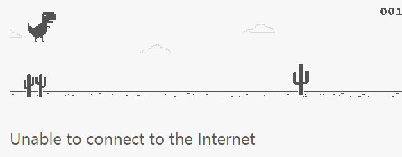

So far we have identified the key building blocks in web architecture- protocols such as HTTP, resources such as URIsuniform resource identifiers, HTML, as well as the systems that help implement them such as TCP/IP for functionality and DNS’s for the user. It’s definitely a mouthful, and a lot to retain!
Therefore, in this section, we’ll explore the requests they make to eachother in more depth, and hopefully by viewing their chatter you’ll understand intricately their inner workings- understanding how to decipher and manipulate HTTP interactions is useful in managing a website.
| HTTP is like a translator at an awkward dinner date. |
| It requests a response using specific modifiers determined by you. |
| These rigidly structured requests define the kind of data you will receive. |
Methods specify the kind of transaction of information that will be occuring. Use the drop-down menu below to learn more about them!
Used for exchanging request/response headers.
Does not change the state of the resource.
Is necessary.
Used to request and return the state and content of a resource.
Does not change the state of the resource.
Is necessary.
Used to process a form input and/or use it's own body to update a resource.
Does change the state of a resource (unsafe).
Is not necessary.
Used to store entity body contents at the requested URI location (file uploads).
Does change the state of a resource (unsafe).
Is not necessary.
Deletes a resource- is the opposite of PUT.
Does change the state of a resource (duh) (unsafe).
Is not necessary.
As seen by 'HEAD', headers that act as metadata for the request can also be added- there's a bunch for requests and responses, and they provide additional information about the origin and nature of the data presented, such as the ability to constrainby applying limits on what can be done with the data, for example, request additional notifications...
With that preliminary information covered, how does one actually make an HTTP request? Well, as a web designer you can provide formsType a message to display:
for your users, giving them a friendly front-end that POSTs their information to your systems. Even more simply, you can type an address in the address bar of your browser- in doing so, you'll be using 'GET', a file-path and a protocol.
This is why it's called an URL! It's a 'Uniform Resource Locator' split into chunks by your client and sent away using protocols...
https:scheme the request will use to retrieve the information //www.google.co.ukauthority to be converted into an ip address by a dns /searchpath to the desired file/page ?q=revisoappended query : This will generate a GET request with a path and protocol, along with some general headers.
| Class | Range |
| Information | 1XX |
| Success | 2XX |
| Redirection | 3XX |
| Client Error | 4XX |
| Server Error | 5XX |
After you make the request, the server responds with it's own general headers, and, if you made a 'GET' request, some contentthe body of a webpage, for example! Hooray! To help understand what has happened, also provided is a statuse.g. HTTP/1.1 200 OK line with a response code and message; these inform of you of the outcomethere are 41 in total of your request.
As a web-developer, your task, along with knowing all of this stuff (or knowing how to re-attain it after you've forgotten it) is usually to provide a user-friendly platform for others to take advantage of your services- whether this manifests as a website or application. Instead of seeing a blank screen or a slew of jargon, when something goes wrong it's desirable to let somebody know why. This is sometimes handled by the client, however websites also sometimes recognize these errors and display some interesting fallbacks of their own.
Requested resource could not be found.